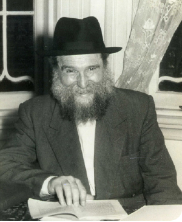

Growing the Yeshiva at All Age Levels
From the life of R’ Yehoshua Shneur Zalman Serebryanski a”h.
Prepared for publication by Avrohom Rainitz

Like all countries south of the equator, the summer months in Australia are Kislev through Shvat. Summer vacation is for six weeks, from the middle of December until the beginning of February. During this time, there are two two-week summer camp sessions. The younger children attend during the first two weeks, followed by the older children for two weeks.
Since the camp sessions for the younger and older children were split, it was possible to continue Jewish studies during the afternoon, even in the summer, albeit on a more limited basis. The class where Jewish studies were learned all day continued during the summer months and even had additional students. They were two local residents, Meshulam Kloberg and Pinchas Medding, smart bachurim who were planning on being counselors in camp, but R’ Zalman’s son, R’ Aharon, convinced them to learn all day instead.
Meshulam was a Yerei Shamayim who wanted to learn in Eretz Yisroel, but his parents refused to allow him to go since they wanted him to attend university. R’ Zalman spoke with the boy’s father and tried to arrange a compromise in which the bachur would stay in Melbourne but would learn in yeshiva. He wrote to the Rebbe about this in a letter dated 2 Teves, and asked that Hashem see to it that the bachur decide to learn in yeshiva full-time. In the end, the parents agreed to the compromise and he stayed in yeshiva.
When the school year began, another bachur came by the name of Uri Nosson Sheink. He had completed three years in university and had decided to devote his time to learning Torah. In a report that R’ Zalman wrote to the Rebbe on 27 Teves, he mentioned that he was a bachur who was smart and diligent in his learning, and thanks to him the level of the learning had risen among the rest of the talmidim.
R’ Zalman also mentioned the bachur, Zecharia Klein, who came to learn in the afternoon, and noted that more bachurim came in the evening. So the yeshiva grew, bit by bit. “As I heard,” wrote R’ Zalman, “the yeshiva has a good reputation in the city, thank G-d, and may Hashem help with His great mercy to grant us success with additional new talmidim and in improving the learning and direction.”
ADDITIONAL TEACHERS
In earlier chapters, the difficulties in hiring teachers for the yeshiva were described. Of all times, it was during summer vacation that R’ Zalman was able to hire two additional teachers. One of them was R’ Uri Kaploun, the grandson of R’ Moshe Feiglin, who lived in Shepparton and learned in the yeshiva in its first incarnation in Shepparton. Now, he had come to Melbourne in order to attend university and he decided to use his vacation to learn Torah. Even after he began studying at the university, he devoted his free time to teaching Torah in the afternoons.
The other teacher was R’ Yona Oberman, who had spent two years in university and had now switched to attending a professional school. He also decided to devote his free time to independent learning in yeshiva and to teaching the young boys in the afternoon.
In R’ Zalman’s letters of 2 and 27 Teves, he reported to the Rebbe about this and concluded with the hope that “the fact that they became teachers in the yeshiva will lead to a double benefit, for us and for them, and may Hashem help and give us success in both matters.”
THE CHILD WHO REMAINED THANKS TO HIS PARENTS’ SACRIFICE
An unexpected addition in the summer months was four little children, seven and nine years old, who came from distant Sydney, a twelve hour train ride away. R’ Zalman agreed to accept them, despite their young age which necessitated special efforts in caring for them, in the hopes that when their parents would be satisfied, it would serve as good publicity in Sydney for the yeshiva and attract more students.
Dealing with these young children took a lot out of R’ Zalman, and several times over the summer he thought he had made a mistake in accepting them. However, in the end, the investment paid off; the parents of one of the older ones wanted to leave him in yeshiva for the following school year. The parents lived in a suburb of Sydney, far from a Jewish environment, and since they were unable to hire a private teacher for him, they wanted to leave him in yeshiva in Melbourne.
R’ Zalman highly doubted whether he would have the wherewithal to deal with a boy so young for an entire school year. In a letter that he wrote to the Rebbe at the end of the summer, he explained his hesitation and that his final decision had been to accept the boy:
“The boy is good and very gentle by nature, but he is young and needs his mother. And yet, we agreed to accept him here, seeing the mesirus nefesh of his parents who want to leave him with strangers so that he can learn more. This is why we accepted him, even though it entails quite a bit of responsibility and is very burdensome. May Hashem help us in this too, that the child be well and succeed in his learning and guidance, thus sanctifying the holy name of the yeshiva and the name of Heaven.”
R’ ZALMAN ASKS THE REBBE FOR CLEAR INSTRUCTIONS
During summer break, an interesting development occurred in connection with R’ Zalman’s plan to start a day school. The Hungarian community, which had a small day school, wanted to expand. Since they heard that R’ Zalman planned on starting a day school, they approached him with the offer of joining forces and making a school together. However, their condition was that their boys learn Jewish subjects separately, with their own teachers.
R’ Zalman consulted with the hanhala of the yeshiva and they decided to reject the offer. Consequently, the Hungarians decided to buy a new building and open a separate day school near the Chabad School.
As was mentioned in earlier chapters, R’ Zalman had toyed with the idea of opening a school for months already, and he had even written to the Rebbe several times about it. However, the Rebbe’s responses did not directly address R’ Zalman’s idea. The Rebbe had written about the need to expand the mosdos and about learning in a way of l’chat’chilla aribber, but there was no clear instruction on this specific matter.
R’ Zalman, who was afraid to take such great responsibility, continued to toy with the idea. His son Chaim was the main one to actualize it. He put in many hours registering students for the day school. Once the Hungarians announced the opening of their own school, R’ Zalman realized that he had to act quickly and open a day school and put tremendous effort into it so that with the start of the new school year, in less than a month, a Chabad day school would open.
In his letter to the Rebbe of 2 Teves, he wrote that at first he had to deal with difficulties on all fronts, starting with registering the children and ending with hiring good teachers. At a certain point, he thought that perhaps the whole idea was not to the Rebbe’s liking, which was why there were so many difficulties. But then things changed and his son was able to register the children, some talented teachers were found who were interested in teaching in the new school, and even the members of the Vaad HaGashmi of the yeshiva, who until then only knew about the plan to start a school in general terms, agreed with R’ Zalman that it was time to open a school.
R’ Zalman described this turnabout to the Rebbe in his letter:
“We began looking for a teacher and children and with difficulty found a small number of students to start with. We will also have to give big breaks to the parents in the tuition, because if we demand full payment they won’t give us their children, and we couldn’t find a teacher.
“When a long time went by during which we searched without results, I began to wonder if I was doing the right thing in taking on us this burden at a time when I did not have a clear instruction from the Rebbe to do this.
“Then, Hashem helped us and three female teachers came to us and we were able to pick the most suitable one. I did not speak seriously with our balabatim, members of the vaad, about this until we were able to see that this could get off the ground and then I called a meeting and told them our plan and the need to open a school, and they agreed.”
R’ Zalman concluded the letter with a request of the Rebbe for him to respond to his questions with a clear answer:
“We hope that Hashem will help us and we will succeed, and the burden of difficulty and the many troubles will be eased. Still, I would like to clarify the matter of the school and the preschool that we agreed to open. Although I wrote a number of times, it wasn’t in the way of a question, because taking action was remote at the time, and therefore, I did not obtain a clear instruction. Now as the matter becomes relevant, it seems sudden and urgent and cannot wait. As we meet with some of the helpers, the doubts begin to perturb me – are we doing the right thing or not?
“Even though the matter in and of itself is good, since we did not have a clear instruction, perhaps the time is not right for it yet. We do not have enough resources to allocate to several matters and it would be better if we concentrated our efforts to one endeavor and then began with a second one. On the other hand, the response to this claim is – are we acting in accordance with our strengths? If we considered our strength, maybe we wouldn’t start anything, and yet we see that we began and Hashem helped us, and may Hashem help us with these matters and provide everything we need.
“This is especially as the Rebbe mentioned several times about expanding the mosad with many talmidim and to go with a breitkait, and perhaps this can be considered an instruction for all these matters.
“So perhaps the Rebbe will grant me a clarification of these doubts and similar things that can arise so I will be able to compose, with Hashem’s help, an organized letter with questions in advance about the entire matter.
“After all that I’ve mentioned, I plead that we constantly be remembered by the Rebbe to arouse great mercy upon us that Hashem grant us success in all the matters we began, with great success and that we be able to open a mosad with all the details.”
FEEDBACK TO R’ MOSHE ZALMAN FEIGLIN
The plan to open a preschool was delayed by some months because of the difficulty in finding a suitable teacher. Then, at the very start of the school year, two suggestions for talented teachers came up. R’ Zalman convened the vaad and they also agreed that it was urgent that they open a preschool, especially since the children of the preschool could then feed into the day school.
In his letter to the Rebbe, R’ Zalman wrote that at the meeting, he told R’ Moshe Zalman Feiglin that the Rebbe had greatly enjoyed hearing that he and his family were interested in helping the yeshiva. And therefore, it was worth continuing to help the yeshiva in order to give the Rebbe more nachas. R’ Moshe Zalman was happy to hear this and said he would speak about it to his children so they would be more involved in the yeshiva.
This is the Rebbe’s response, written on 19 Teves:
B”H
19 Teves 5715
Brooklyn
… R’ Yehoshua Shneur Zalman, Greetings!
After a long silence, I received your letter of 2 Teves and was pleased that you write that you also see that it is possible to expand the yeshiva and its matters more and more. I was especially pleased that you wrote about the preschool. The importance of this matter is inestimable as we know from Chazal regarding the breath of the schoolchildren. Especially when nowadays the learning of the letters and Nekudos and behaving with Yiras Shamayim is something a school needs to do, because you cannot always rely on the parents who were the ones to do this in the time of the Shas and even in the time of the Shulchan Aruch and its commentaries. As to your writing that there are obstacles, it is surprising that every obstacle makes such a great impression when even human eyes can see that the difficulties are behind us.
About what you wrote regarding a high school, since I do not know the situation on the scene it is hard to give detailed instructions. You need to decide in accordance with the main point, which is that Yeshivas Oholei Yosef Yitzchok of Melbourne needs to be a center of Judaism and Torah and Yiras Shamayim. All things which will aid in this, without conceding on principles of the Chabad movement, should be done energetically. Surely R’ Groner told you about the school here that is attached to the yeshiva. It seems that the school you write about is like this.
I was pleased that you wrote that you spoke with R’ Moshe Zalman Feiglin about his and his family’s involvement in yeshiva matters. Although I also wrote to him about this, there is no comparison between speaking face to face to reading it in a letter. So surely, from time to time, you will arouse him time and again, and through him his children as well.
It is surprising that you do not write about the results of the discussion with Mr. Gutwirth and also with Mr. Rich (from whom I received a letter some time ago and I also responded to it, and of course, about added interest in the yeshiva). Surely you will write in full about all this at the next opportunity. And also in regards to the s’farim, which according to R’ Groner’s letter he wrote him about this.
According to this, it is understood that this answer applies also to the end of your letter. If there are any doubts in anything, the way to resolve them is: you cannot forgo principles of Chabad, you cannot become a political party of any sort, but aside from that, you need to expand the mosad, in quantity and quality. May Hashem give you the merit and grant you success that with good health you and all Anash will see how Yeshivas Oholei Yosef Yitzchok of Melbourne is the channel to draw down and receive Hashem’s blessings, materially and spiritually, for all Anash and their households in Australia and through them, to all the Jewish people there, since from this central channel and pathway there extend channels and pathways to each one in particular. This is as it is brought in several places in Chassidus on the subject of the drawing down from Above to the entire Order of Hishtalshlus.
With blessings for success in all the above. I await good news and send regards to all those interested in our welfare.
M. Schneersohn
Beis Moshiach (staff). "Growing the Yeshiva at All Age Levels." Beis Moshiach, no. 898 (October 15, 2013).